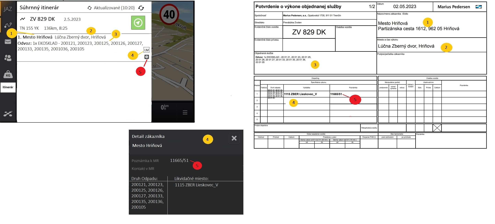
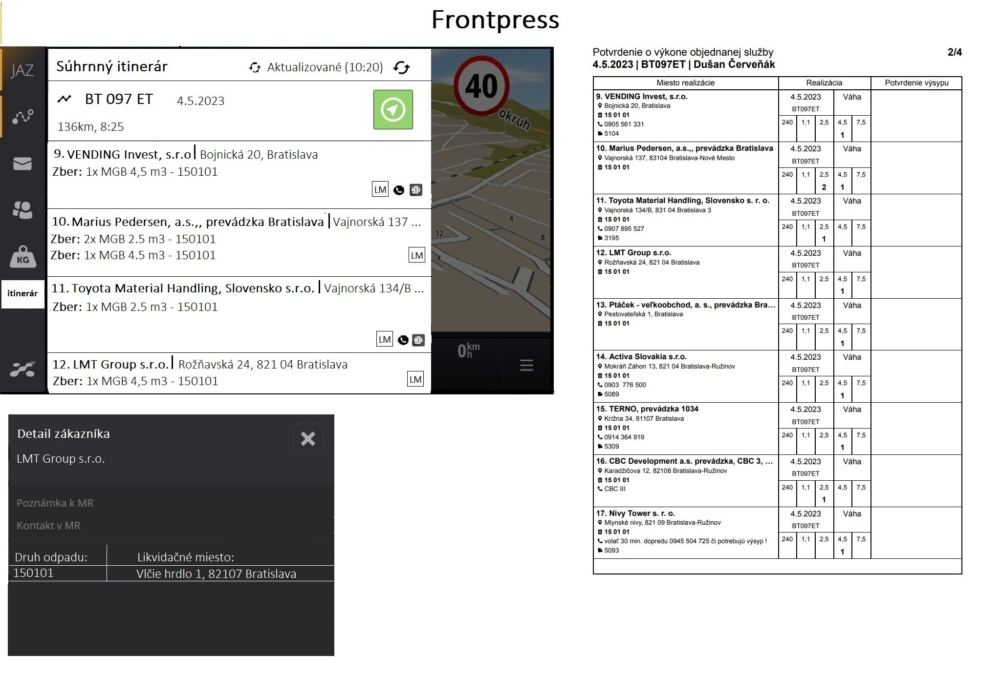
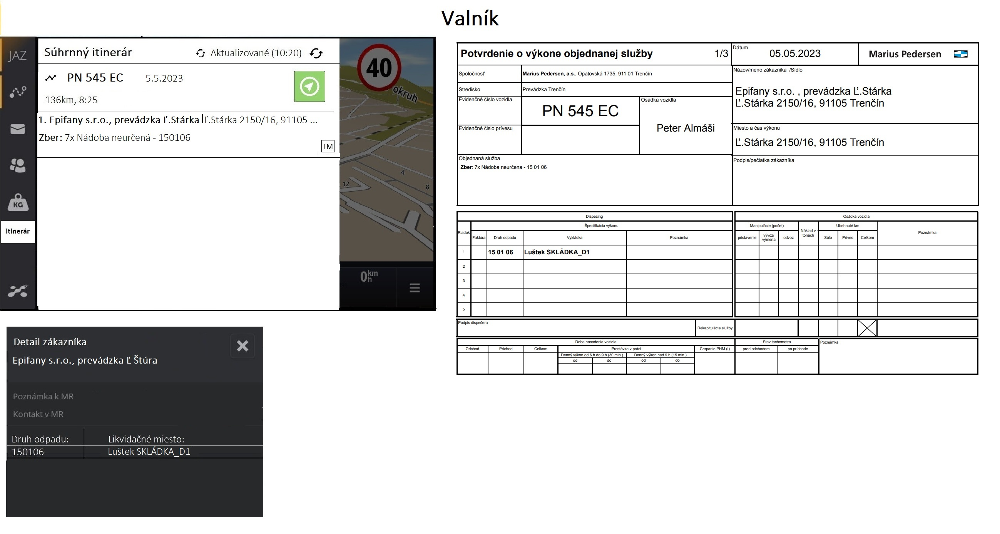
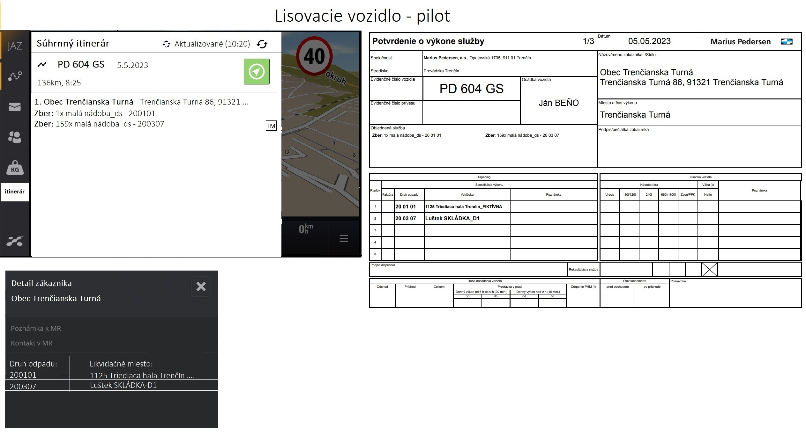
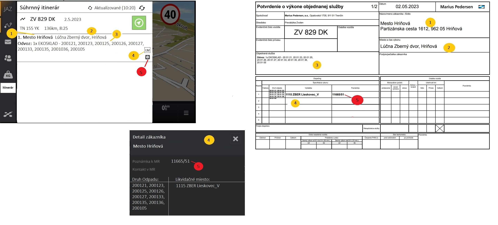
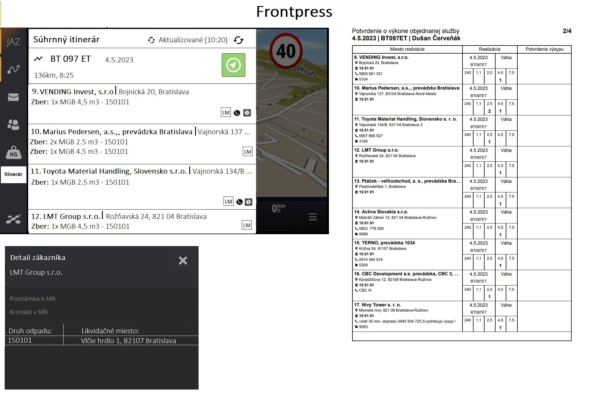
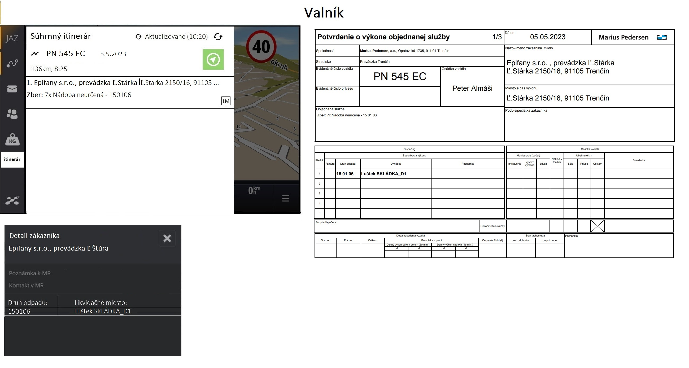
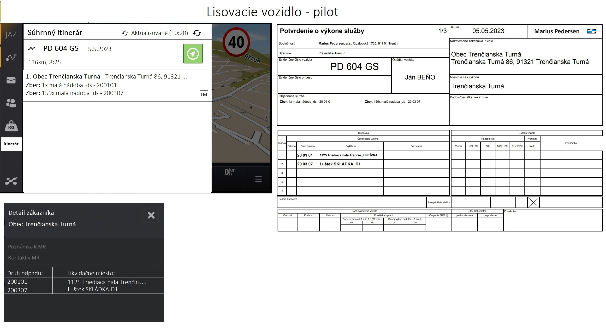

Požadavek
Cílem požadavku je rozšíření aplikace FOB o souhrnný itinerář zakázek vozidla pro daný den. Tento itinerář má svou logikou vycházet z tiskové sestavy POVOS, ve které dochází k agregaci jednotlivých objednaných služeb do skupin. Dodány pak byly také náhledy naznačující požadované chování.
Poznámka: Zadání požadavku bylo aktualizováno dle informací získaných v rámci on-line střetnutí. Původní zadání není v rámci dokumentu zachováno.
 

Aktuální stav
Aktuálně je trasa posílána v takové podobě, která neumožňuje požadované zobrazení. Odesílány jsou přímo lokace objednané služby, které neobsahují dostatek informací. Pro úplnost si připomeneme rozsah aktuálně předávaných informací.
truecsharp1Návrh řešení
Byť se jedná o požadavek na aplikaci FOB, úpravy bude nutné provést také na straně RoadPlan. Role jsou pak rozděleny následovně (zjednodušeně):
- Webová aplikace: Zajistí přípravu potřebných informací včetně zmíněné agregace do požadované struktury. Data jsou tedy odesílána v takové podobě, která nepotřebuje další zásah na straně FOB.
- Mobilní aplikace: Zajišťuje pouze získání informací a následné zobrazení řidiči (včetně souvisejících akcí jako odeslání požadavku na aktualizaci načtených dat).
Webová aplikace
V rámci webové aplikace není chování vidět, i přesto je třeba zajistit provedení hned několika úprav. Ty si nyní popíšeme…
- Příprava itineráře trasy – zjednodušeně se jedná o export denního výkonu do požadované struktury (včetně dříve naznačených agregací).
- Odeslání itineráře do FOB – připravené informace je pak nutné odeslat do FOB, je tedy nutné rozšířit komunikační rozhraní o nové typy zpráv.
Příprava itineráře trasy
Příprava itineráře trasy nezahrnuje pouze export denního výkonu do požadované podoby, provedena musí být další opatření zajišťující aktuálnost získaného výstupu.
Poznámka: Jedná se o obdobné chování, které je již řešeno při odesílání trasy pro navigaci posádky vozidla.
Export itineráře trasy
Export itineráře neprobíhá pro všechny denní výkony, je spouštěn pouze v uvedených případech:
- Je přijat požadavek na získání itineráře trasy z FOB (itinerář je generován až na vyžádání).
- Dojde ke změně odpovídajícího denního výkonu (pouze denní výkony, u kterých proběhl předchozí krok).
Nyní můžeme přijít k samotnému exportu – jeho výsledek bude ukládán společně s trasou v rámci entity Přihlášené zařízení na denním výkonu, kde bude k tomuto účelu přidán nový atribut.
- Interní poznámka: V rámci detailní analýzy bude nutné konzultovat (interně) způsob verzování zpráv – společná verze pro trasu a itinerář / oddělené verzování.
V rámci exportu je pak řešena agregace dat, kdy jsou na vstupu získány objednané služby obsažené v rámci denního výkonu. Na výstupu je pak předána výsledná množina v předepsané struktuře (viz dále).
- Poznámka: Zmíněná agregace objednaných služeb vychází z logiky tiskové sestavy POVOS. V rámci této sestavy je pak plánováno rozšíření, které by ale mělo být v rám exportu do FOB již zaneseno (bude zobrazena jak poznámka, tak kontakt k místu realizace).
- Interní poznámka: Za zvážení stojí zobecnění algoritmu pro oba případy – sestava POVOS a itinerář ve FOB. Rozdíl je pak především ve způsobu zobrazení, v sestavě POVOS totiž řešíme velikost stránky výsledného dokumentu (vyhodnocení počtu záznamů na stránce, které ve FOB odpadá).
Nyní se dostáváme k samotnému zpracování záznamů – agregaci objednaných služeb do výsledné struktury. Ta probíhá následovně:
- Zákazník – výsledná položka itineráře je pro 1 konkrétního zákazníka.
- Místo realizace – výsledná položka itineráře je pro 1 konkrétní místo realizace (z pohledu jeho adresy).
- Porovnáváno textově dle atributů adresy, nikoliv dle identifikátoru místa realizace.
- Objednaný úkon – výsledná položka itineráře může obsahovat různé objednané úkony.
- Na úrovni objednaného úkonu (jeho typu) je slučováno dle typu nádoby a v ní obsaženého druhu odpadu.
- V případě HNK a RNK odpovídá četnost počtu objednaných služeb sloučených v jeden záznam.
- U ostatních typu dopravy se jedná o součet četnosti nádob v rámci sloučených objednaných služeb.
- Druh odpadu s likvidačním místem – výsledná položka itineráře může obsahovat různé druhy odpadu s likvidačními místy.
- Na úrovni vývozu na likvidační místo je slučováno dle druhu odpadu a likvidačního místa (může se jednat o kolekce).
- Paušál zobrazený v rámci tiskové sestavy POVOS zde není požadován.
- Místo realizace – výsledná položka itineráře může obsahovat různé poznámky a kontakty k danému místu realizace.
- Důvodem je to, že jsou místa realizace slučována dle jejich adresy, nikoliv jednoznačného identifikátoru.
- Na úrovni místa realizace je slučováno dle poznámky a kontaktu daného místa realizace.
Poznámka: Výsledná podoba itineráře trasy se pak může lišit dle typu dopravy daného denního výkonu (obdobně jako v rámci tiskové sestavy POVOS).
Aktualizace itineráře trasy
Abychom měli vždy k dispozici vždy aktuální data, je nutné je při každé změně denního výkonu aktualizovat. Děje se tak za splnění dále uvedených podmínek:
- Jedná se o „dnešní“ denní výkon (aktuální den realizace).
- Denní výkon je v jednom z uvedených stavů: Schválený, Plněný.
- K dennímu výkonu je přihlášeno vozidlo (vozidla s tabletem).
Pokud tedy dojde ke změně v rámci takového denního výkonu, je aktualizována jak trasa pro navigaci posádky, tak zde řešený itinerář trasy. Současně je odeslána notifikace řidiči, že došlo ke změně na trase.
Poznámka: Stažení aktualizované trasy či itineráře je v režii aplikace FOB.
Odeslání itineráře do FOB
Neméně důležité je předání itineráře trasy aplikaci FOB, zde vzniknou minimálně 2 nové typy zpráv…
- Požadavek na část itineráře – zprávu odesílá aplikace FOB, která požaduje zaslání konkrétní části itineráře trasy (nutné posílat postupně z důvodu maximální velikosti zprávy).
- Odeslání části itineráře – zprávu odesílá aplikace RoadPlan, jedná se pak o odpověď na zprávu předchozího typu. Obsaženy jsou informace o konkrétní části itineráře.
Poznámka: Uvedené chování probíhá na pozadí, neprobíhá zde žádná interakce s uživatelem. Uvedeno je zde především pro úplnost.
Interní poznámka: Nové typy zpráv svou logikou vychází z těch pro odesílání trasy denního výkonu (data pro navigaci posádky vozidla).
Požadavek na část itineráře
Zpráva je odesílána aplikací FOB, její struktura je uvedena následně (jedná se o návrh, který se v rámci detailního návrhu řešení může ještě mírně měnit).
html/xml1Význam jednotlivých elementů je následující…
| Element/atribut | Datový typ | Povinnost | Popis |
|---|---|---|---|
| itineraryPart | – | Ano | Element s informacemi o požadovaných částech itineráře. |
| routeId | Řetězec | Ano | Identifikátor denního výkonu, pro který mají být odeslány požadované části itineráře. |
| partFrom | Číslo | Ano | Pořadí první požadované části itineráře (začátek intervalu požadovaných částí itineráře včetně). |
| partTo | Číslo | Ano | Pořadí poslední požadované části itineráře (konec intervalu požadovaných částí itineráře včetně). |
| fileV | Řetězec | Ano | Verze, ve které je požadováno zaslání části itineráře. |
Odeslání části itineráře
Zpráva je odesílána aplikací RP, její struktura je uvedena následně (jedná se o návrh, který se v rámci detailního návrhu řešení může ještě mírně měnit).
html/xml1Význam jednotlivých elementů je následující…
| Element/atribut | Datový typ | Povinnost | Popis |
|---|---|---|---|
| itineraryPart | – | Ano | Element s informacemi o konkrétní části itineráře. |
| routeId | Číslo | Ano | Jedinečný identifikátor denního výkonu. |
| order | Číslo | Ano | Pořadí konkrétní části itineráře. |
| count | Číslo | Ano | Celkový počet částí itineráře. |
| lastMod | Datum a čas | Ano | Datum poslední změny itineráře. |
| file | Řetězec | Ano | Popis o konkrétní části itineráře. |
Obsah zprávy je pak z důvodu minimalizace přenášeného množství dat kódován. I zde si ukážeme strukturu obsaženého hodnoty (i zde se jedná o návrh, který se v rámci detailního návrhu řešení může ještě mírně měnit).
Poznámka: Význam jednotlivých hodnot je uveden v rámci uvedené struktury, a to ve formě poznámky.
truecsharp1Mobilní aplikace
Grafický návrh:
List:
.png)
Detail:
.png)
Akceptační testy
Pro splnění požadavku musí být splněny následující testovací scénáře.
TC01: Xxx
- Systém…
Poznámka
–